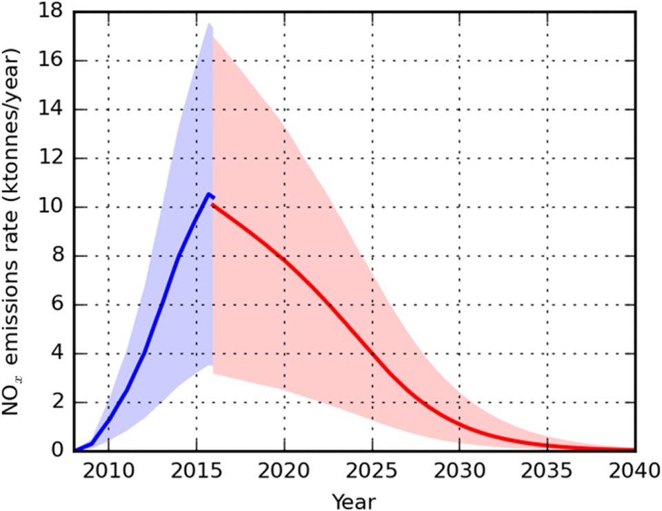

FILE FCP-49 HISTORICAL CASE FILE
Volkswagen diesel emissions defeat-device scandal
ASSESSMENT: Use of defeat devices in identified diesel vehicles is conclusively documented; scope and individual knowledge must be bounded by evidence.
Documented findings, economic interpretation and unresolved claims are assessed separately.

Claim under review
The question is whether Volkswagen installed software to detect emissions tests and conceal excess real-world NOx emissions.
The EPA notice identified particular 2.0-liter diesel engine families and alleged software recognized test conditions. Volkswagen’s later guilty plea admitted a defined corporate scheme, while CARB tests supplied independent measurements of on-road emissions.
Context and timeline
U.S. researchers found discrepancies between laboratory and on-road diesel emissions. EPA issued a 2015 notice of violation; Volkswagen admitted defeat-device software in certain vehicles, followed by criminal and civil resolutions and recalls.
A defeat device is the software mechanism; excess emissions varied with vehicle and driving conditions. Do not infer every model, engineer or executive had the same knowledge from a corporate plea covering specified conduct.
Primary records and formal findings
EPA and CARB test records, DOJ plea and FTC actions establish defeat-device use in affected vehicles and deceptive marketing findings. They do not cover every Volkswagen model or every automaker.
Independent replication should compare laboratory cycles with on-road portable measurement and preserve calibration versions. Recall and settlement records define remedies, not necessarily the complete population-wide health effect of the vehicles.
Independent economic evidence
Independent on-road testing showed NOx emissions substantially above laboratory limits in affected cars; atmospheric science links NOx to health and environmental harm.
EPA’s technical notice, CARB’s independent testing and Volkswagen’s plea form complementary evidence: allegation, measurement and admission. They define affected vehicles but not every model or individual’s knowledge.
Counter-evidence and limitations
A defeat device does not prove every vehicle exceeded standards identically or that all engineers and executives knew. Settlement terms resolve legal claims but do not make every alleged detail a criminal verdict.
Falsifiable checks and assessment
Repeat laboratory and portable on-road tests across affected and comparison vehicles; inspect software code, calibration records and approval chains to map scope and knowledge.
Assessment: Use of defeat devices in identified diesel vehicles is conclusively documented; scope and individual knowledge must be bounded by evidence.
Sources and evidentiary notes
- U.S. EPA, Notice of Violation to Volkswagen (September 2015)Official technical allegation and affected engine families. It addresses this episode but cannot alone resolve the broader causal question.
- U.S. v. Volkswagen AG, plea agreement (2017)Corporate admission and criminal resolution for specified conduct. Its findings are limited to the parties, conduct, dates or mandate covered by that record.
- CARB, Investigation of Volkswagen emissions (2015–16)Independent state testing documents real-world discrepancies. It addresses this episode but cannot alone resolve the broader causal question.
Historical research only; not investment or legal advice.